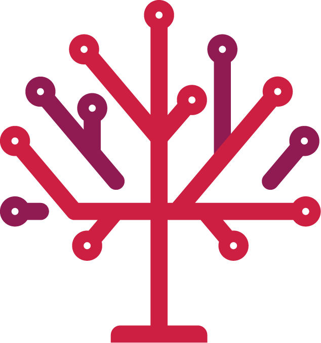

Every measure is mapped to the same two sides so results add up across differently worded questions: Restrict (the anti-data-center outcome) and Allow (the pro-data-center outcome).
One dot per measure, colored by the side that is ahead. Hover for the latest count; click to open the race.
Bars show YES on the left and NO on the right, colored by what a YES vote means for data centers. The center tick is 50 percent. Star a measure to pin it to the top of this list; stars are saved in your browser.
Poll closing times in Eastern time, and a running log of every count change the tracker has seen.
Data center questions voters settled earlier this year, plus party-primary advisory questions and measures that did not make the November ballot.
A measure is included when the question itself is about data centers: bans and megawatt caps, zoning referendums on data center sites, agreements with data center developers, voter-approval requirements written to stop a data center, and advisory questions asking whether to allow them.
Compiled from Ballotpedia's 2026 data center measure tracking, MultiState's September 2026 roundup, county election offices, and local reporting as of mid-October 2026. Ballot language is quoted where an official text was available and marked as a paraphrase otherwise.
Every race card links to the county election office page the numbers come from. Results refresh automatically every minute from results.json; the race registry is races.json.
Built by Redbud Consulting, a polling, qualitative research and data strategy firm. Questions or corrections: redbud.consulting.